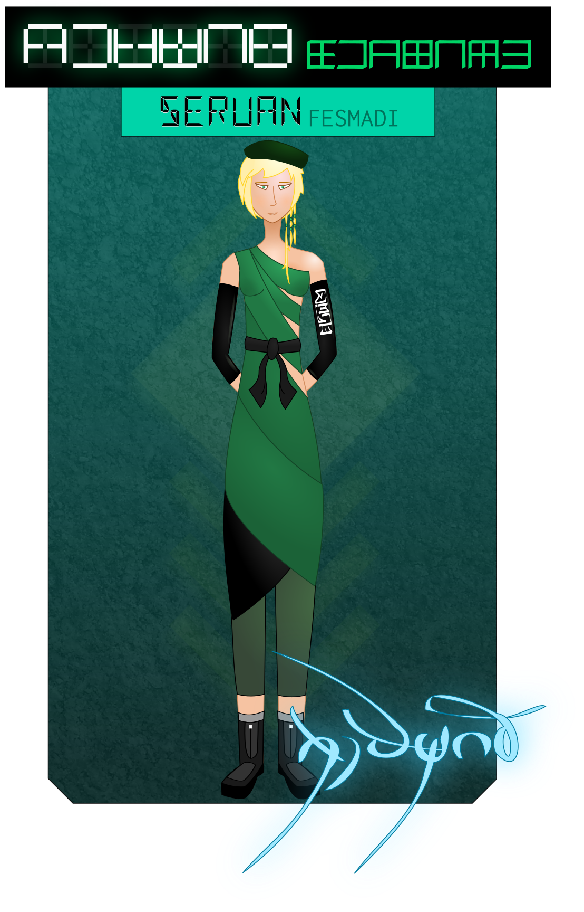

Seruan Fesmadi drifted. The water in the little pool caressed her aching limbs, bringing her respite from a long day on her feet. She gazed up at the stone ceiling, the reflection from the pool’s luminators dancing over its mural of Mount Serenity, curls and wisps of light darting in and out through the trees and clouds.
Someone rapped on the arch. “You asked to see me, ma’am?” said a voice.
Seruan closed her eyes. “Come in, varlas.”
Safris strolled into the room, and took a seat on the edge of the pool. “Rough day, ma’am?” she asked, unzipping her boots and dipping her toes in the water. “I don’t usually see you in here this early.”
“My caseload is atypically high this season,” said Seruan, stretching her arms. “It’s been a long day.”
“Who exactly did you have to piss off to get stuck here, anyway?”
Seruan laughed gently. “I volunteered, Safris.”
“You what?”
“Young worlds are always problematic. We’d had settlements here for what, half a century? I’ve seen what happens when inexperienced mediators try to tame them. After Firlin’s retirement, I took the opening.”
“Glad you did?”
“No regrets.”
“Wow. You’re a masochist.”
“The injections help more than you’d think. I’m just not as young as I used to be.” Seruan massaged an aching joint. “I assume you know why I asked you here.”
“Figured Rostag snitched.”
“He had, I quote, ‘concerns about your professionalism in regards to the proper handling of prisoners,’ and hoped I’d ‘address the situation’ so as to ‘avoid further incidents.’”
Safris rolled her eyes. “Ros has a stick so far up his ass you could use it for an orbital tether. How the fuck did he ever make it out of the academy?”
“The Director’s view is that our work takes diversity of character. I tend to agree with her. Rigidity of thought is a useful characteristic, if not a globally desirable one.” She smiled. “That said, I don’t foresee Rostag-varlas advancing futher in our ranks.”
Safris shrugged. “So, going to chew me out?”
“Of course not.” Seruan waved a hand dismissively. “This is a debriefing, not a lecture.”
Safris giggled. “I don’t usually kiss and tell.”
“Make an exception.”
“Is that an order?”
“Yes. How was she?”
“She was great.”
“Safris.”
“What, you don’t want the juicy details?”
Seruan laughed. “I want the details that are relevant to her case, Safris-varlas.”
“If you insist.” Safris drew her foot in an arc through the water, sending a ripple out across the pool. “She needed it. She was in really rough shape when we brought her out of the annex, and it helped bring her back down to earth. She seemed… steadier when she left. More focused.”
“That’s encouraging to hear. I take it she enjoyed the liaison?”
“She asked to see me again. She kinda begged, really.”
Seruan raised an eyebrow. “That will be interesting in the long term. I assume you intend to indulge her?”
“I mean to do a lot more than that.”
Seruan paused. “How would you characterize your attraction to her?”
“Got a bit of a crush on her, truth be told.” Safris smiled dreamily. “Well. Maybe more than a bit.”
“Really?” Seruan opened her eyes and glanced at Safris. “I wasn’t expecting an emotional connection. It’s not mutual, is it?”
“It definitely is.”
“…how, exactly? Are you sure you’re reading the situation correctly?”
“Did I read a cute, feisty, incredibly vulnerable girl’s emotional responses right while she was naked in my arms? I’m just gonna let you think about that question for a sec.”
Seruan laughed. “Alright, that’s fair.
Safris grinned. “You know, she was convinced you were behind the whole thing.”
“She thought I ordered you to have sex with her?”
“To be fair, it’s totally the sort of thing you’d do.”
Seruan nodded. “I suppose it is. What’s curious to me is that the girl displayed complete disregard and contempt for authority throughout our entire interaction. Beyond that, her politics are outright anarchistic.” She cleared her throat. “Safris, you’re the most steadfast nationalist I’ve ever known. If you’ll pardon my language — what the fuck?”
“They do say opposites attract.”
“They haven’t taken a dozen Shevran courses in interpersonal psychology. Be serious with me, Safris.”
“Alright. I think you’re misreading her.”
“Really?”
“You saw one side of her. I’m sure you were on your best behavior, but you’re still an authority figure. She’s got automatic defenses that kick in, no matter how you treat her.”
“And you’re not an authority figure?”
“These things are relative, right? You’re the big scary boss-lady to her; I’m just a lowly grunt in comparison. It gave me a window to get through to her.”
“Interesting. This could be useful.”
Safris straightened and folded her arms. “To be crystal clear, ma’am, I will not obey any order to use my intimate relationship with Cassi to manipulate her.”
“Of course. You shouldn’t,” Seruan said quickly. “That wasn’t what I meant. I’m sorry it struck you that way.”
Safris lowered her arms. “Understood, ma’am. I’m sorry I misunderstood.”
“You know the worst mistake people in our roles make, Safris?”
“Mixing booze and painkillers?”
“They forget we’re supposed to be the good guys.” Seruan closed her eyes again. “They try to control everyone and everything. They hide behind lies and secrets and veils. They trust nobody. They leave nothing up to faith.”
“So you’re saying you have faith I’ll manipulate her of my own free will?”
“I’m saying I have faith you won’t have to.” Seruan turned over, and with a few quick strokes swam to the edge of the pool, where she caught the ladder and looked up at Safris. “When you’re on the right side, you can accomplish a lot with honesty. The trouble is getting people to believe you.”
The corner of Safris’ mouth twitched upwards. “It’s always nice to see idealism around here.”
Seruan hauled herself out of the pool, wincing at the strain on her muscles. “Speaking of painkillers, could you pass me that dispenser?”
Safris tossed the device to Seruan, who caught it deftly, and clicked the actuator. A green light flashed and a pill dropped into her hand. She placed it carefully under her tongue, and exhaled deeply as her aches started to ebb.
Safris frowned. “Hang on. Have you been off those all day?”
Seruan nodded. “They make it hard to think clearly.”
Safris’ eyes widened in shock. “So you’re just… in pain all the time?”
“It’s an important warning. If I shut those signals off, I could end up tearing a muscle, or worse. My body wasn’t built for this kind of world; I need to remember that.”
“Yikes, Ser. I’m so sorry.”
“It’s alright. The pool lets me heal a bit, and if I take a pill before bed, I can just… drift off into a warm haze. All in all, I can bear it.”
“You’re a badass. You know that, right?”
Seruan wrapped a towel around her bare body. “That means something coming from you.”
Safris stepped closer, and put a hand on Seruan’s shoulder. “You ever need help getting out of the pool, or, like, lifting shit, you let me know, okay?”
Seruan smiled, and inclined her head. “You’re very kind, Safris.”
Safris returned the smile, and stepped back. “Only to people who deserve it, ma’am.”
“Safris.” Seruan hesitated. “Nobody else on staff here knows. I… can trust you to be discreet about my condition?”
Safris frowned. “Of course, ma’am. Can I ask why, though?”
“I don’t want to be thought of as a cripple. I know you, and I trust you not to be… dramatic. While I respect the rest of this facility’s staff greatly, I do not know them as well.”
“I’m honored you would place your personal trust in me.” Safris bowed. “It won’t leave this room, ma’am. You have my word.”
“Thank you.” Seruan hesitated, and then added, “And I think I want to take you up on your offer. Climbing out of the pool strains my arms to their limit unless I’m very careful with my footing, and if I slipped…” She winced. “Having some support would make me feel a lot better.”
“It would be my pleasure, ma’am.”
